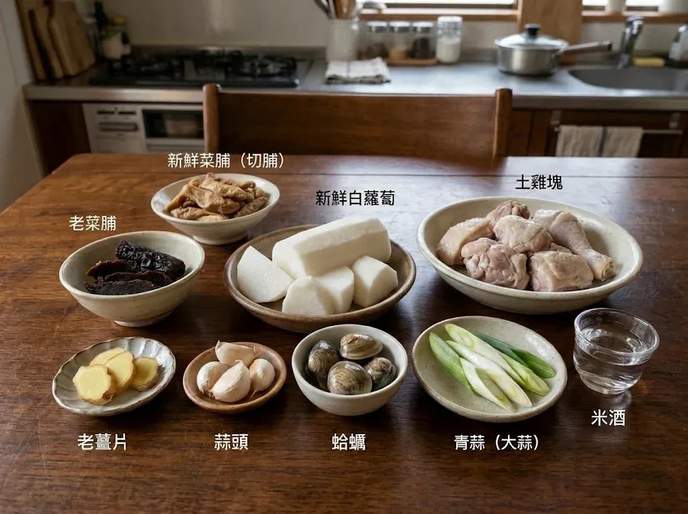

農家餐桌
四季飄香，
菜脯私房食譜分享。
自家曬的菜脯，不只下飯、好煲湯，更是從小吃到大的家常溫暖記憶。我們整理了四道最受歡迎的經典家常食譜，從甘醇的雞湯到下飯的小菜，教你在家輕鬆煮出古早好滋味！

經典煲湯
超三代菜脯雞湯
集結「新鮮白蘿蔔（孫子代）、日曬新菜脯（爸爸代）、陳年老菜脯（爺爺代）」於一鍋，甘醇濃郁、層次無比豐富的經典名湯！
| 食材清單 | 分量 / 備註 |
|---|---|
| 老菜脯 | 半條（切塊備用，可參考老菜脯與分辨真假秘訣） |
| 新鮮菜脯（條仔脯） | 1 條（切塊備用，詳見條仔脯介紹） |
| 新鮮白蘿蔔 | 半條（去皮切大塊，挑選秘訣看挑蘿蔔小故事） |
| 土雞 | 1 隻（剁塊或整隻下鍋皆可，切塊建議先滾水汆燙去血水） |
| 老薑片 | 5 片（約拇指大小厚切） |
| 蒜頭 | 5 顆（洗淨即可，不必剝皮保持蒜香） |
| 蛤蠣 | 5 顆（提鮮靈魂，亦可用乾貨干貝替代） |
| 青蒜（大蒜） | 1 支（切斜片備用） |
| 米酒 | 50 cc |
料理作法步驟
- 初燉雞湯底：將薑片、帶皮蒜頭、蛤蠣（或干貝）、汆燙過的土雞肉與米酒放入鍋中，加入清水淹過雞肉，開大火煮滾。
- 中火慢熬：轉為中火，蓋上鍋蓋燉煮約 20 分鐘，讓雞肉鮮味與蒜薑精華釋放出來。
- 三代會合燜煮：轉小火，將新鮮白蘿蔔塊、條仔脯與老菜脯塊一口氣丟入鍋中，蓋上鍋蓋細火燜煮 25 分鐘，讓三種深淺不同的蘿蔔甘甜與陳香徹底融合。
- 起鍋提香：關火，灑入切好的青蒜片，稍微拌一下即可熱騰騰盛鍋上桌！
貼心小提醒：
因新、老菜脯本身已帶有鹽分與原汁精華，煮這道湯完全不必再加鹽巴！如果當餐吃不完，記得要把鍋內的菜脯撈掉，隔餐如果加熱就不用再加進去，不然菜脯泡在湯裡越久，湯頭會越來越鹹喔！


下酒家常
下酒香炒菜脯米
天然日曬無加鹽的菜脯米，吸飽了香菇與油香，甜度完全不輸高麗菜乾，是一口接一口停不下來的下酒佐餐絕品！
| 食材清單 | 分量 / 備註 |
|---|---|
| 無鹽菜脯米 | 1 包（約 150～200g，純風日乾燥，看菜脯米製程） |
| 乾香菇 | 4～5 朵（稍微沖洗後剪成細條狀備用） |
| 食用油 | 2 大匙（特別推薦使用菜脯埕冷壓紅土花生油，香氣倍增！） |
| 醬油 | 1～1.5 大匙 |
| 白胡椒粉 / 黑胡椒粒 | 各適量（提香靈魂） |
| 食鹽 | 少許（依個人口味斟酌） |
| 水 | 少許（約 2～3 大匙，視鍋中乾濕度添加） |
| 葷食爆香料（選配） | 蔥花、蒜末、豬肉末或蝦米適量 |
料理作法步驟
- 清洗瀝乾：拆開菜脯米，用清水清洗 2～3 次洗淨露天日曬的微量浮沙，撈起稍微擠乾水分（不必浸泡，以免洗去天然蘿蔔甜味）。
- 香菇煸香：熱鍋倒入 2 大匙食用油（推薦菜脯埕花生油），下乾香菇絲（葷食可在此時一併加入肉末、蔥蒜末），小火煸炒至香氣撲鼻。
- 下鍋翻炒：倒入瀝乾的菜脯米，轉中火快速翻炒，加入醬油、黑胡椒粒、白胡椒粉與少許鹽翻炒均勻。若鍋中偏乾，沿著鍋邊嗆入 2～3 大匙水，讓菜脯米均勻受熱吸附醬汁。
- 大火收汁起鍋：大火翻炒均勻約 5 分鐘，香氣四溢即可盛盤上菜！
風味特色：
整道菜完全不加一滴糖，甜味全來自秋冬白蘿蔔本身的天然甘甜！不僅是超棒的下酒菜，拿來包草仔粿、包粽子或當飯糰內餡也超讚（當內餡時調味建議再稍微重一點點更有味）。


白飯殺手
古早味炒菜脯下飯到讓媽媽多洗 3 杯米
香、脆、鹹、甘！掌握退鹹與最後加糖的終極秘訣，炒出來的菜脯香脆回甘，拌飯一碗接一碗！
| 食材清單 | 分量 / 備註 |
|---|---|
| 手工切脯（或條仔脯） | 150g（切成均勻小丁，詳見切脯介紹） |
| 豬油或沙拉油 | 1.5～2 大匙（傳統用豬油最香） |
| 蒜頭 | 3 瓣（切末；吃純素者可改用老薑末替代） |
| 青蔥 | 1 支（切蔥花；素食者可略） |
| 紅辣椒 | 1 根（切圈提色提味，怕辣者可去籽） |
| 二砂或白砂糖 | 1 小匙（提出蘿蔔甘甜的關鍵秘訣） |
| 白胡椒粉 | 適量 |
料理作法步驟
- 清洗與退鹹（3～5分鐘）：用清水沖洗菜脯表面的微塵與鹽霜，用手輕輕搓揉約 1 分鐘，接著浸泡在乾淨冷水中約 3～5 分鐘。可切一小丁試咬鹹度，若覺得太鹹可多泡 3 分鐘，剛好即可撈起徹底擠乾水分，切丁備用。
- 爆香拌炒（3～5分鐘）：中火熱鍋，倒入豬油或沙拉油，依序加入蒜末、蔥花（吃素放薑片）、辣椒圈煸炒出香氣。接著倒入瀝乾的菜脯丁，中大火快速翻炒 2～3 分鐘，炒出菜脯的香脆鑊氣。
- 終極秘訣起鍋（1～2分鐘）：關火或轉微火，迅速灑入 1 小匙砂糖與適量白胡椒粉，快速拌勻讓糖粒化開裹在菜脯表面即可起鍋！
主廚秘訣：
熱熱吃時菜脯會稍微偏軟，稍微放涼後再吃，口感會更加爽脆驚豔！砂糖能把蘿蔔本身的甘甜引出來，搭配胡椒香，鹹甜交融、脆口無比，不管是配白飯、清粥、包粽子還是當油飯配料都絕配！


蓬鬆烘蛋
古早味菜脯蛋蓬鬆厚實外酥內嫩版
誰說菜脯蛋只能煎得扁扁乾乾的？掌握高溫熱油、蛋液打出細緻氣泡與半凝固攪拌手法，在家也能做出金黃焦香、外酥內蓬鬆的飯店級菜脯蛋！
| 食材清單 | 分量 / 備註 |
|---|---|
| 手工切脯（碎丁） | 50g（預先泡水退鹹約 3 分鐘，徹底擠乾水分） |
| 新鮮雞蛋 | 4～5 顆（常溫蛋尤佳） |
| 青蔥 | 1 支（切細蔥花） |
| 九層塔 | 1 小把（洗淨擦乾、粗切碎，提香靈魂） |
| 食用油 | 2～3 大匙（油量稍多是蓬鬆外酥的關鍵） |
| 白胡椒粉 | 少許 |
| 砂糖 | 半小匙（中和鹹味並增添焦香） |
| 醬油或香油 | 數滴（增色提香，可依喜好添加） |
料理作法步驟
- 乾煸菜脯丁：鍋中不放油或放半茶匙油，先將擠乾的菜脯丁下鍋乾煸 1～2 分鐘，炒出菜脯香氣後盛起放涼備用。
- 打出豐沛氣泡：碗中打入 4～5 顆雞蛋，加入乾煸過的菜脯丁、蔥花、九層塔碎、少許胡椒粉與半小匙糖。用筷子或打蛋器用力打勻，直到表面打出滿滿細緻小氣泡（空氣是蛋體蓬鬆的核心）。
- 高溫熱油下鍋：鍋中倒入 2～3 大匙食用油，大火加熱到油微微起波紋（油溫一定要夠熱，蛋液下鍋才會瞬間炸開蓬起）。
- 快速攪拌定型：一口氣倒入打好的蛋液！趁著底部剛受熱膨脹、尚未全熟時，用筷子由外往內快速畫圈攪拌數次，讓中心未熟蛋液接觸鍋底。
- 八成凝固翻面：當整片蛋液呈現八成凝固狀態時，順勢翻面，將另一面煎至金黃焦香，輕壓有厚實彈性即可滑入盤中上菜！
蓬鬆三大秘訣：
1. 蛋液一定要打出氣泡；2. 油溫一定要夠高；3. 剛下鍋時趁未凝固前快速攪拌，做出像烘蛋一樣的多層次空氣感，咬下去外層焦香脆皮，內裡軟嫩厚實！